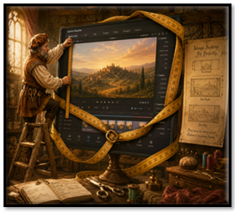
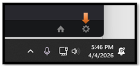
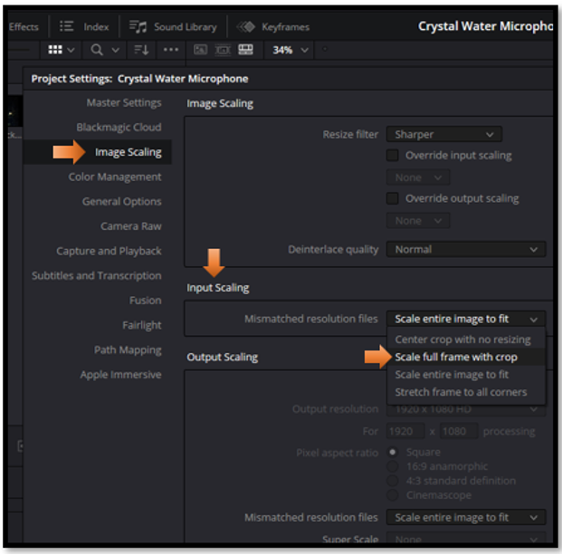

~3 Fixing Image Scaling in DaVinci Resolve ~
~How to Make Your Artwork Fit the Theater Viewport~
6/15/2026

Do not widen the background with the Position X in the Inspector. Instead do this.
Project Settings (gear icon bottom right) Yes, it is on the right and not the left, like most settings are.

Image Scaling > Input Scaling
Set to:
“Scale full frame with crop”

Note-Just because it is cropped, it is not lost. We can still use it when we go to move the window, and this is exactly the behavior that we need.
With the scaling set to “Scale full frame with crop,” your artwork now fits the theater viewport the way it was meant to — balanced, centered, and ready for its close‑up. Think of this step as tailoring the frame before the performance begins. Once the fit is right, every move you make inside the viewport becomes easier, cleaner, and more expressive. Now your project has the perfect foundation to shine.